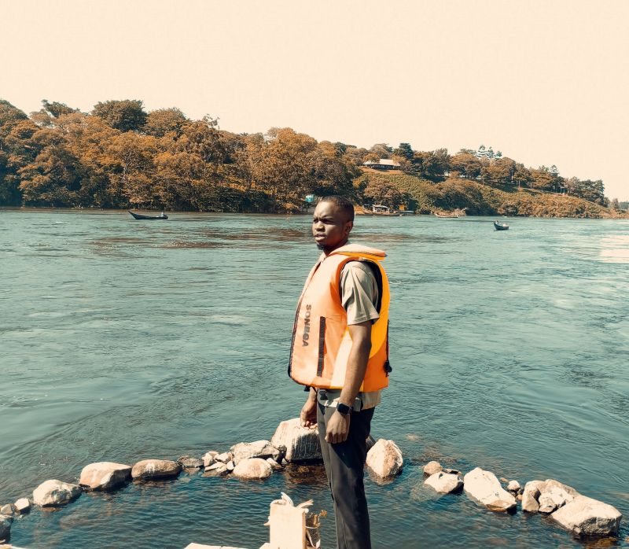

Katende Micheal | WDD 130

Hello, my name is Katende Micheal and welcome to my Home page, it feels amazing to finally have my own website ;)
Im 24 years old born and raised in Uganda, currently pursuing my degree in software development from BYU pathway and hopefully achieve this goal by end of 2027 so that I can go and serve a mission.
I enjoy listening to music and currently learning to make my own music and love dealing with computers and tech and thats why im excited to learn about this course. I expect to be able to create a fully functioning website by the end of the course.